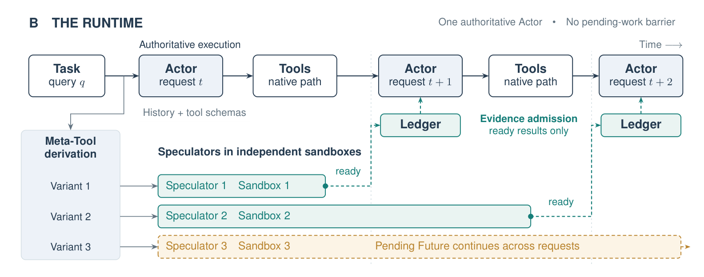

Under review
Perseus
Non-Blocking Parallel Exploration with a Speculative Swarm
Broadening discovery while one Actor retains task authority. Independent speculative acquisitions, persistent Futures, and ready-only evidence let exploration continue alongside the main trajectory.